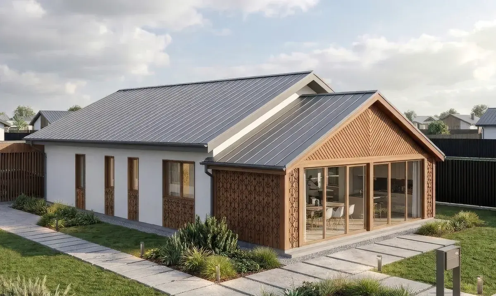
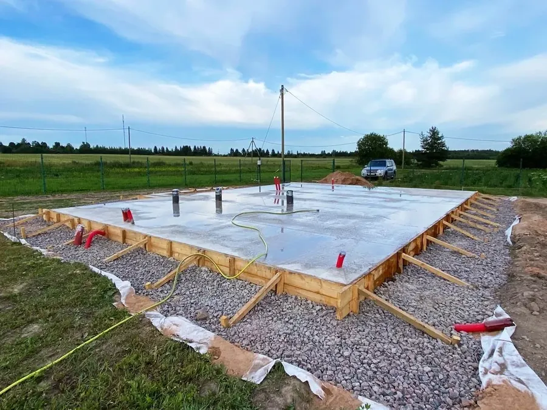
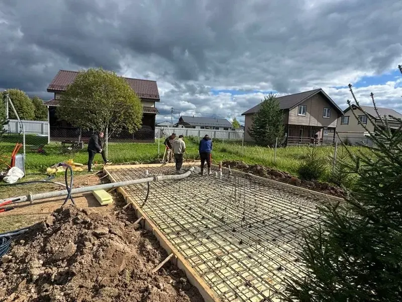
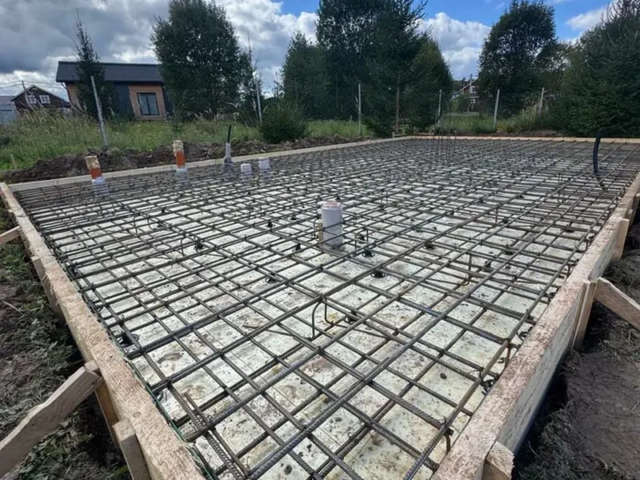
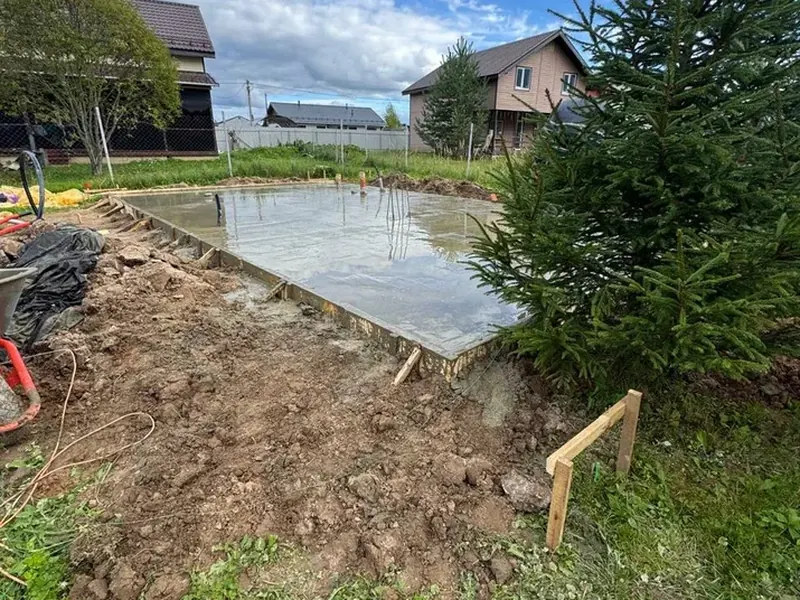
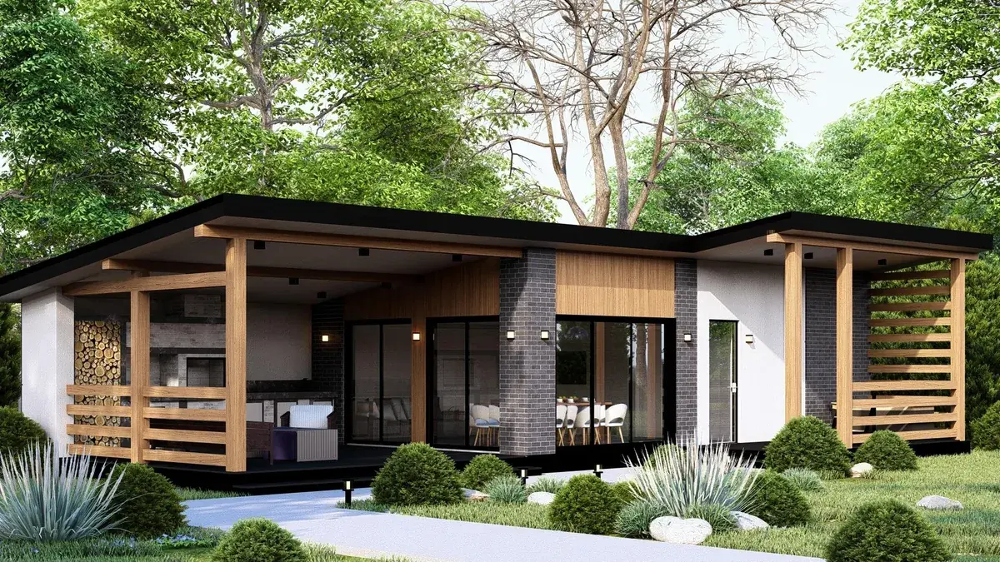
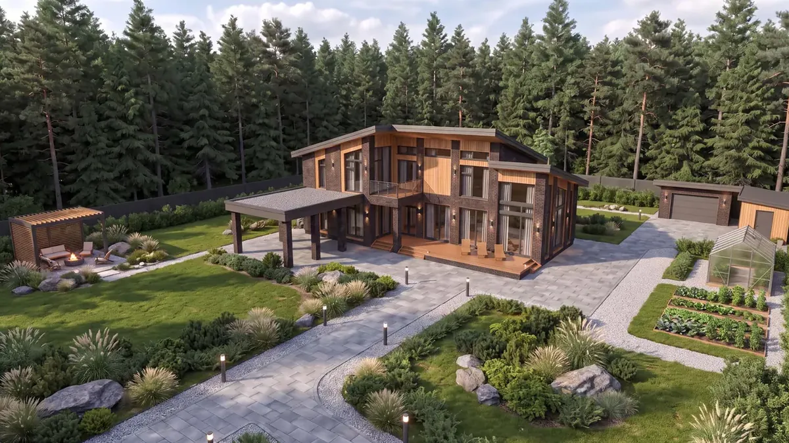
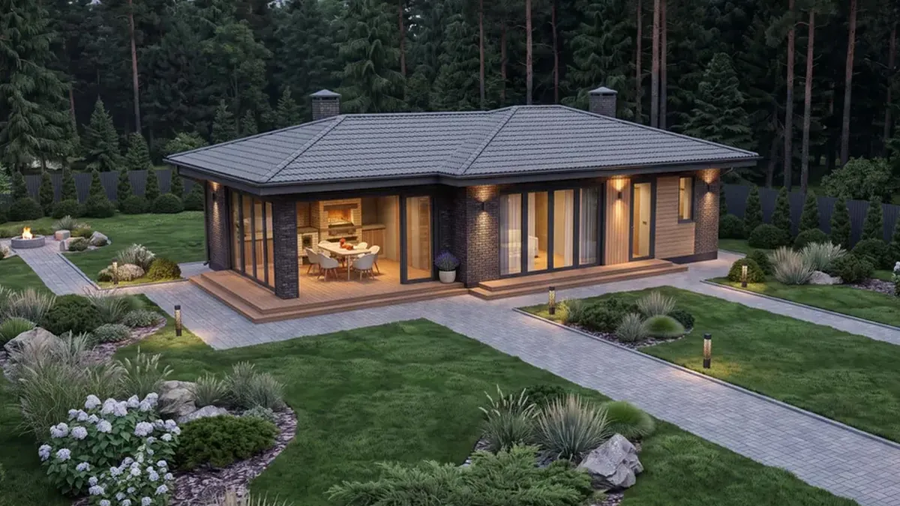

Дом «Терра» 13,8×9,8
- 183,1 м² застройки
- Полная рабочая документация
Тёплый контур12 780 000 ₽
Смотреть проектАрмированная железобетонная плита под всей площадью дома: подходит для слабых и пучинистых грунтов, где лента и сваи не работают. Строим в Москве и Московской области.

Монолитная плита — железобетонное основание под всей площадью дома. Бетон армируется двумя рядами стальной сетки и заливается за один день, поэтому основание получается единым и не имеет швов. При морозном пучении плита поднимается и опускается вместе с грунтом, не ломаясь, — за это её называют «плавающим» фундаментом. Черновой пол получается уже в комплекте.
Преимущества
Слабые, пучинистые, водонасыщенные — плита опирается всей площадью и не боится подвижек грунта.
Дом не проседает углами: вес распределяется по всей площади основания.
Верх плиты — уже готовое основание под чистовое покрытие. Не нужны отдельные лаги и стяжка.
Опалубка, армирование и заливка бетоном — за 7–14 дней в любой сезон.
Правильно армированная монолитная плита служит весь срок жизни дома и не требует обслуживания.
Ввод воды и канализации закладываем до заливки — без штробления потом.
Как мы строим
Этап 1
Пробуем грунт шурфом, считаем толщину плиты и армирование. Толщина монолитной плиты — от 200 до 300 мм.
Этап 2
Снимаем плодородный слой, отсыпаем песок и щебень слоями с трамбовкой — подушка гасит пучение.
Этап 3
Опалубка, два ряда стальной сетки в швы, защитный слой — по нормам СП.
Этап 4
Заливаем бетон М300 и выше за один день, вибрируем и гладим поверхность — черновой пол готов.
Этап 5
70% прочности — за 7 дней. Летом проливаем водой, зимой укрываем.
Этап 6
Гидроизолируем плиту под кладку или каркас. Акт, паспорт фундамента, гарантия 5 лет.
Важно понимать: монолитный фундамент — самый дорогой вид основания. Выбираем его по данным геологии участка: если грунты позволяют ленту или сваи — честно предложим их и сэкономим бюджет. Бетонные работы, включая зимнее бетонирование, ведём по СП 70.13330.2012.
Подобрать фундамент под проектНаши объекты
Армирование, заливка и готовое основание — так выглядит фундамент, который мы делаем.



Вопросы и ответы
Да: бетон с противоморозными добавками и прогревом. Зимой очередь на бригады короче.
Для каменных домов — 250–300 мм, для лёгких каркасных достаточно 200 мм. Точную толщину считаем по геологии и весу дома.
Зависит от площади и толщины плиты. После выезда инженера называем фиксированную цену в договоре — без роста в процессе.
Плита «плавает» вместе с пучинистым грунтом — ленту на таких грунтах выдавливает. Плюс черновой пол уже в комплекте плиты.
Примеры проектов
Проекты из нашего каталога, где применён этот вид фундамента.

Тёплый контур12 780 000 ₽
Смотреть проект
Строительство под ключ11 168 000 ₽
Смотреть проект
Строительство под ключ15 815 000 ₽
Смотреть проект
Строительство под ключ6 252 000 ₽
Смотреть проектЛенточный фундаментСвайный фундамент Каркасная технология Все проекты